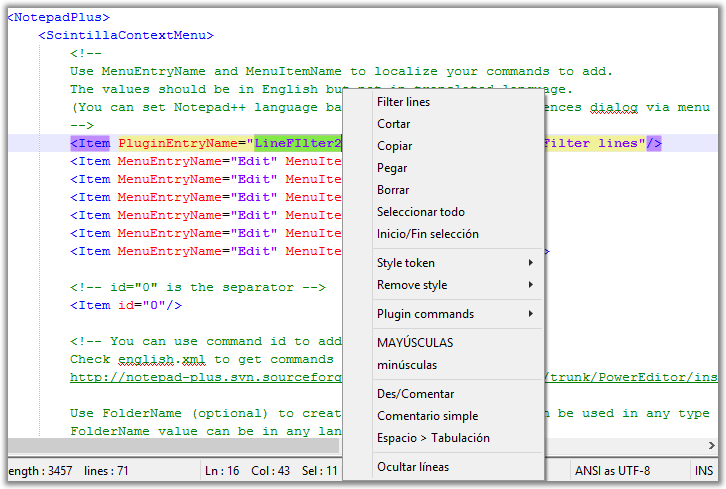

Texto original
Sugiere una traducción mejor
| Anterior: Menú principal | Elementos GUI | Siguiente: Windows auxiliar |
 Se puede acceder al menú contextual haciendo clic derecho en cualquier lugar de la pantalla de edición. Permite un acceso rápido a comandos de uso frecuente y el usuario puede configurarlo. Para modificar el contenido del menú contextual, debe editar el archivo contextMenu.xml . Puede abrirlo como cualquier otro archivo; sin embargo, puede hacer esto. Lo referimos a NpWiki ++ para la sintaxis específica de este archivo XML. Los comentarios dentro del archivo también deberían ayudarlo.